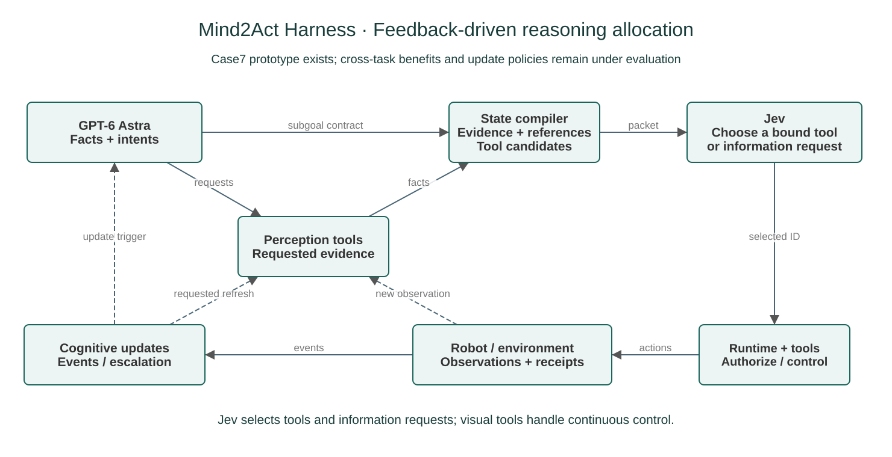
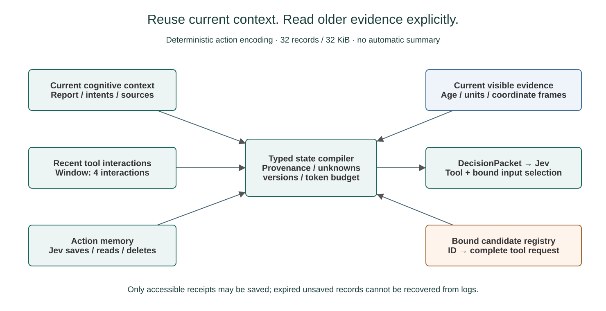
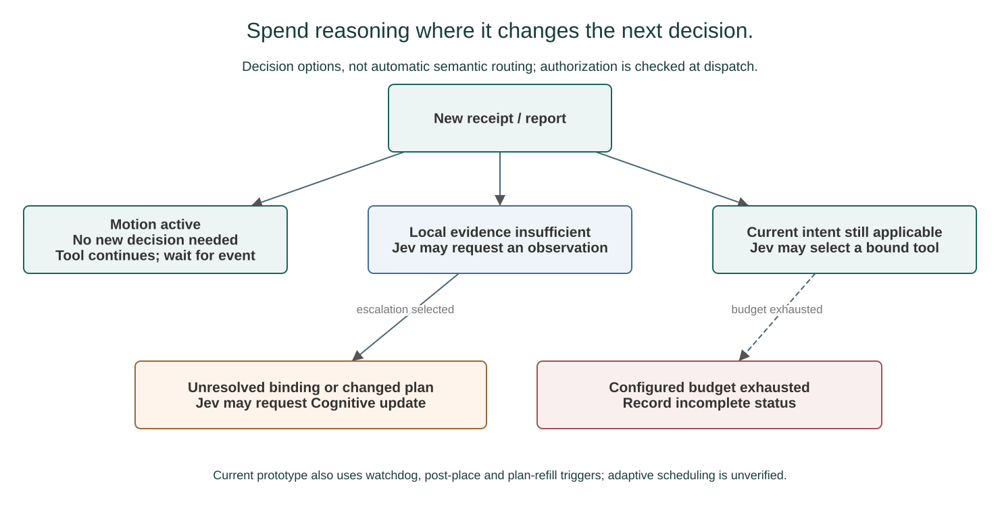

Evidence-Grounded
State Compilation
将感知结果编译成带来源、坐标系、不确定性与失效条件的文本状态。
METHOD PROPOSAL / ASTRA × JEV
Contract-Guided Coordination of Cognitive and Reactive Agents for Robotic Manipulation
把复杂推理交给 Astra，
把有证据、有候选的局部决策交给 Jev。
上游完成子任务拆解，并调用感知工具获取结构化信息；下游通过专门的 harness 接收契约、有效场景状态与局内记忆。研究重点是：这些信息能否复用，哪些事件值得重新调用大模型，以及完整系统能否以更低总成本完成相同任务。
方案设计 · 尚未完成 Astra–Jev 端到端接入及成本评测 · 本轮不研究 RSI
01 / THE RESEARCH QUESTION
把大模型换成更便宜的决策模型，并不自动降低系统成本。视觉理解、状态整理、动作候选生成，以及错误后的重试和升级，都可能成为新的主要开销。
我们的假设是：高层规划与局部执行需要的信息并不完全相同。Astra 可以在子目标边界建立契约和感知计划，harness 则持续维护可追溯状态；Jev 只在有意义的决策事件上选择适用候选。收益需要在同等任务条件和完整成本账本下验证。
将感知结果编译成带来源、坐标系、不确定性与失效条件的文本状态。
将完整动作绑定为候选，由 Jev 选择；数值、权限与时效检查留给代码。
保留关键任务事实，限制无关历史，按事件选择刷新、局部判断或升级。
02 / METHOD
Astra 是上游规划与感知调度者；Jev 是文本状态上的候选选择者；Runtime 与控制器负责真实动作。图中连线表示目标设计，不代表新系统已经接通。

在子目标边界或冲突时组织复杂推理，调用 perception tools 并声明当前执行目标。
实际 API 标识与调用配置待固定；不把每帧大模型调用当作默认循环。
GPT-6 Astra 为指定的上游配置名称，实际 API 标识与调用设置待固定。Jev 的版本与输入限制以运行前官方文档核验为准；不将 API 延迟或控制器频率当作系统实时性结论。
03 / STRUCTURED HANDOFF
Jev 接收文本而非图像，不能直接代替视觉 Reactive 或连续动作生成。结构化交接必须说明当前目标、观察依据、剩余任务和可执行选项；仅把图像路径或自由描述放进 JSON 不构成完成 grounding。[State] [Choice]
| 接口 | 必要信息 | 谁负责 |
|---|---|---|
| SubgoalContract | 目标、版本、前置条件、工具许可、检查点与预算 | Astra 提议，harness 校验 |
| SceneState | 对象绑定、事实来源、时间、单位、坐标系与未知项 | Perception + 状态维护 |
| Candidate Registry | ID 绑定完整动作、参数、来源、期限与授权版本 | 候选提供者 + 执行适配器 |
| DecisionPacket | 契约引用、有效证据、相关记忆和合法候选 | State Compiler → Jev |
下列为合成接口示例，不是运行日志。示例中坐标变换未知，所以不提供运动候选；selected_id 为空，尚未调用 Jev。实际运动参数必须由经过声明和验证的候选提供者绑定。
{
"example_only": true,
"episode_id": "illustration-cp01",
"goal_id": "fill-plate-a",
"contract_version": 3,
"objective": "Place the required food in plate A; count only evidence-supported deposits.",
"preconditions": [
"correct food identity",
"fresh evidence before motion"
],
"allowed_tools": [
"observe",
"perceive",
"execute_registered_candidate"
],
"completion_conditions": [
"required items stably in plate A"
],
"budget": {
"max_calls": "configured before run",
"remaining_usd": null
},
"on_conflict": "request_astra_revision"
}合法候选不等于物理上必然成功。confidence 不能代替真实抓取、放稳或触发证据；最终任务结果由独立环境判据确认。
04 / EPISODE-LOCAL MEMORY
Jev 不自动记住上一轮请求。harness 为每次请求组织必要上下文，把稳定任务事实、近期执行事件、历史摘要与当前几何分开维护。

| 记忆类型 | 保留什么 | 何时失效或压缩 |
|---|---|---|
| Pinned task facts | 未完成订单、规则、完整待执行路线与阶段前提 | 按依赖保留；不能随短窗口淘汰 |
| Recent event window | 最近 K 个动作、回执、失败与效果判断 | K 与 token 预算由开发集选择并冻结 |
| Evidence-linked text | 带来源索引的早期事件摘要、待确认假设 | 矛盾触发复核；不能覆盖精确账本 |
| Live scene cache | 当前对象位置、跟踪状态和接触证据 | 随运动、遮挡或身份变化失效；不能从旧摘要复活坐标 |
自由文本摘要由 Astra 或声明的摘要模块生成，费用记账。这里仅讨论单次任务内的工作记忆；跨局经验晋升、RSI 与权重更新不属于当前 proposal。
05 / COST-AWARE ROUTING
已有健康动作继续执行时，无需模型反复回答“继续”。证据过期先局部刷新；有效状态中的语义选择交给 Jev；目标冲突、候选不足或重大歧义再回到 Astra。

不为无关未来计划更新撤销当前授权。
不向 Jev 重复询问确定性的“继续”。
保持健康动作，等待回执或显式检查点。
调用数减少属于待测目标；没有新的模型或机器人结果。
以上为路由设计示意，不是实际决策结果。预算不足不能成为跳过必要观测或放宽物理检查的理由。
C_total = C_Astra + C_perception + C_candidates + C_Jev + C_summary + C_retries/fallback + C_execution
API、GPU/工具与仿真开销分开记录，每次实际调用只记一次。报告所有尝试的平均成本，以及所有尝试的总成本 / 成功 episode 数，包括失败与升级的费用；成功数为零时该比值未定义。
先固定任务成功与时限约束，再比较成本。时延按实际关键路径测量，异步耗时不简单相加；固定环境时钟、time_scale、负载和并发。当前不提供虚构价格、节省比例或成本曲线。
06 / TASK REQUIREMENTS
| 案例 | 需要保留 | 主要待验证点 |
|---|---|---|
| E / P | 身份、累计需求与实际完成量 | 感知绑定与账本更新，不以动作回执代替入盘 |
| S / M / F | 空间绑定、完整顺序与映射假设 | 窗口压缩是否丢失必要依赖 |
| FR1 / FR2 | 当前目标、窗口与释放状态 | 刷新频率和完整端到端时延 |
| PR1 / PR2 / PR3 | 目标读数、参考轨迹与实际残差 | 候选参数绑定与连续控制能力 |
| CP01 / CP02 | 订单 / 局部位置与阶段前提 | 运动中的状态失效与升级成本 |
| 其他组合任务 | 按核定规范保留配方、空间或序列依赖 | 环境、候选与判据接入后再测，不宣称已覆盖 |
07 / EVALUATION PLAN
当前没有新实验结果。先获取原生 trace，随后做无动作的影子评估，再做在线闭环；离线决策一致不能替代物理成功。
| 组别 | 配置 | 检验内容 |
|---|---|---|
| A | Astra 主导的完整流程 | 系统级基线 |
| B | 统一状态 / 候选 + 规则 | 是否需要模型选择 |
| C | 统一状态 / 候选 + Astra 仅输出 ID | 公平的输出与输入对照 |
| D | 统一状态 / 候选 + Jev | 选择器表现与时延 |
| E | D + 有界记忆 + 事件路由 | 完整成本—任务表现权衡 |
B–E 共享感知与候选提供模块；A 是系统比较。逐任务报告成功率、候选覆盖率、过期拒绝率、升级率、总成本与时延分位数，并附样本数和不确定性。
消融 pinned facts，比较长历史与窗口摘要；检查序列、计数及证据丢失。
比较每决策事件刷新与事件触发复用；固定阈值后在独立实例测试。
计入感知、摘要、候选和 fallback；保留失败费用，披露可用任务范围。
若每次 Jev 决策都依赖 Astra 完整重做视觉推理，或总成本和尾延迟未改善，应报告负面结果并调整分工。
08 / STATUS & SOURCES
EvoMemHarness 的固定快照可提供授权、Runtime、取消确认与 notes 的参考基础。本页新增的状态编译、完整候选注册表、Jev 适配和预算路由均为方案设计。没有修改机器人运行代码、调用付费模型或产生新测评成绩。
文本状态与每请求上下文；图片不是 Jev 输入。
从声明的候选中选择；不代替连续动作参数生成。
运行前复核版本、限制与计费；本提案不预设实时性或价格优势。
阈值需开发集验证；不把置信度当作物理成功证据。
已有授权、Runtime 与 notes 的基础，不代表新 Astra–Jev 组合已实现。
仅参考页面组织形式；不沿用其算法主张或实验结果。